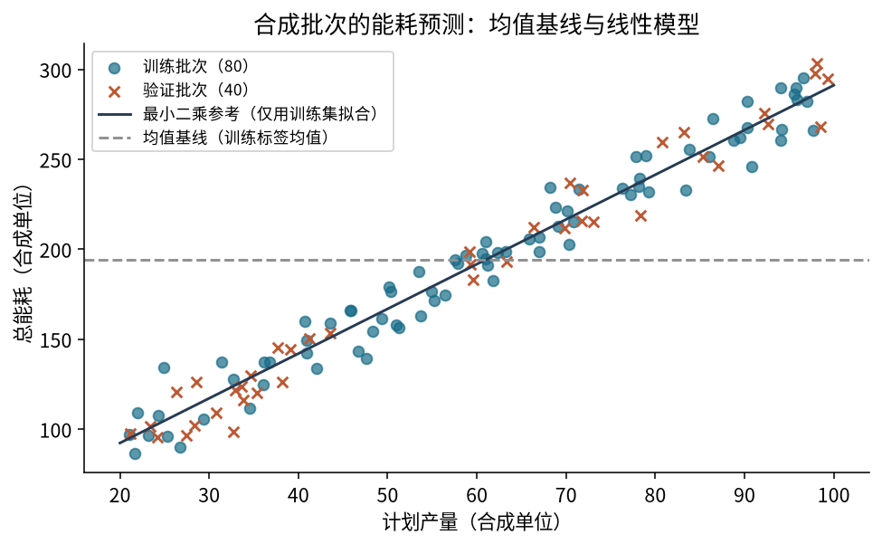

线性回归与平方损失
T03 · 机器学习 · 共同理论 · 2学时
从预测公式走到训练目标
01选定模型先从一条直线开始
02给定参数确定斜率与截距
03计算预测输入变成预测值
04汇总损失比较预测与训练标签
05寻找参数明确训练的目标
- 解释模型参数怎样影响预测。
- 手算残差、平方损失与 RMSE。
- 区分训练目标和验证证据。
已有任务，为什么还需要新模型？
在批次开工前，根据已确定的计划产量，预测完工后的总能耗。
均值基线对每个批次都输出同一个常数，没有利用当前批次的产量信息。
如果历史资料显示不同产量通常对应不同能耗，我们希望预测能随输入变化。
用一条直线表达预测
|
计划产量 |
输入 |
|
实际能耗 |
标签 |
|
斜率 |
模型参数 |
|
截距 |
模型参数 |
给定 ：产量 30 时预测 100，产量 50 时预测 140。
输入变化和参数变化要分开
保持参数不变，输入增加 ：
- 输入增加 1 个单位，预测改变 个目标单位。
- 保持 不变， 增加 10，每个输入的预测都增加 10。
改变斜率时，预测的移动量与输入有关；改变截距时，各预测移动相同数值。
模型解释不能脱离单位和观测范围
- 的单位与能耗相同； 的单位为“能耗单位／产量单位”。
- 产量只在 20—100 范围内，零产量没有得到数据检验。
- 拟合关系描述输入与预测的变化，不能单凭它建立因果关系。
截距是 处的模型预测，不一定是工厂真实固定能耗。
均值基线也在这个模型形式中
图形是一条水平线，参数由训练标签的均值确定。
比较的问题：允许预测随产量变化，能否在相同验证对象与指标下改善预测？
同一个模型对样本共用参数
对第 个样本：
下标 区分样本； 没有样本下标。
我们寻找一组共同拟合训练记录的参数，而不是每行各选一条直线。
有的样本更准，有的样本更差
换一组参数后，不同样本的预测误差可能朝不同方向变化。
要比较两组参数，需要：
- 使用相同的训练样本。
- 逐一对应预测与标签。
- 用同一种方式汇总全部训练误差。
残差保留方向，却可能互相抵消
正残差表示预测偏高，负残差表示预测偏低。
两个残差为 和 ，平均为 0，却没有一个预测正确。
本课程统一使用“预测减实际”。衡量误差大小时，需要绝对值或平方等处理。
从均方误差到半均方误差
- 平方避免正负抵消，使较大误差占更大比重。
- 取平均描述每个样本的平均平方误差。
- 为 MSE 的一半，用来比较当前参数的训练拟合。
乘以正的常数不改变哪组参数使损失最小，但会改变损失数值。
损失和评价指标怎样联系？
同一组样本、同一组预测上：
的单位是目标单位的平方；RMSE 回到目标单位。
同一批样本上，较低的 对应较低的 RMSE。训练 不能直接代替验证 RMSE。
暂停讲解，先完成逐行计算
从逐行误差得到一个损失值
| 0 |
1 |
0 |
−1 |
1 |
| 1 |
3 |
1 |
−2 |
4 |
| 2 |
5 |
2 |
−3 |
9 |
若想知道误差具体来自哪里，还要回看逐行差异。
改变参数，预测与损失怎样变化？
仍用 。
|
参数
|
预测
|
半均方误差
|
|
|
|
|
|
|
|
|
|
|
|
|
这三个样本上损失为 0，能否保证所有新批次也零误差？
教师演示：固定斜率，只改截距
保持 ，将 b 从 0 改为 2。预测和损失会怎样变？
核对： 时 ； 时预测 ，残差 ，。
训练要寻找什么？
固定模型形式、训练数据和损失定义，寻找损失较小的参数：
把 看作两个坐标，每个参数位置都有一个损失值。
参数变化 → 预测变化 → 残差变化 → 损失变化。
试到的最好，不等于所有参数中的最优
固定 ，只尝试下面四个截距：
|
|
0
|
1
|
2
|
3
|
|
|
|
|
|
|
这些候选中 最好；但 能得到更小的零损失。
本次没有探索其他斜率。参数更多或范围更大时，逐个枚举成本会增加。
最小二乘参考仍需验证检查

训练与验证批次、均值基线和最小二乘参考
残差平方和、MSE、半均方误差的最优参数集合相同。
训练拟合更贴近散点，不等于在新对象上一定更好。
单独排序后，还在计算原来那些样本吗？
输入与标签分别重新排序，再按位置计算残差和损失，会怎样？
若要调整记录顺序，必须把每条记录的输入与标签一起移动。
今天明确了训练的目标
模型形式 → 参数 → 逐样本预测 → 残差 → 损失 → 比较参数
- 同一个线性模型对样本共用 。
- 损失汇总训练拟合；验证结果检查未参与拟合的对象。
- 有限试探只能说明试过的候选中谁最好。
下一讲：怎样利用当前位置附近的损失变化，系统调整参数？
离堂检查：训练损失更低就够了吗？
一个候选训练损失更低，是否应该把它用于所有未来批次？
还需要什么证据？说明评价对象与数据用途。